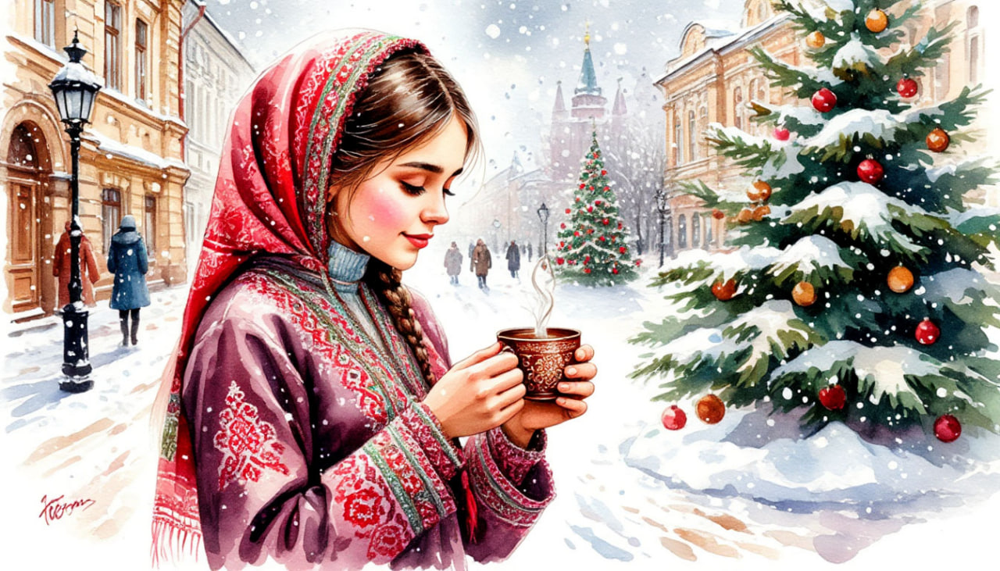

На НОВЫЙ ГОД в КАЗАНЬ.

Даты тура: с 30 декабря 2025 года (вт) по 3 января 2026 года (сб)
Стоимость тура:
- 23 300 р. - взрослый
- 23 200 р. - пенсионеры/школьники
- 31 200 р./чел - одноместное размещение
По программе:
- - Обзорная экскурсия по Казани
- - Экскурсия по территории Кремля
- - Вечерняя экскурсия Новогодняя Казань
- - Мастер-класс по Чак-Чаку
- - Экскурсия в Раиф и Свияжск
- - Храм всех религий
- - Посещение термального комплекса (за доп. плату)
Программа тура:
1 день:
- 18-00- выезд из Костромы от ТРЦ "РИО" (Ул. Магистральная, 20), правый угол от центрального входа
2 день:
- Прибытие в Казань
- Завтрак в кафе города.
- Обзорная экскурсия по городу «Новогодние краски Казани». В ярком новогоднем украшении и морозном запахе хвои, древний город предстанет в самом его сказочном воплощении!
- - Богородицкий монастырь, где хранится чудотворная икона Казанской Божией Матери;
- - Петропавловский собор – ценнейший архитектурный памятник и один из духовных символов Казани;
- - Смотровую площадку Казанского Кремля, с которой открываются фантастически красивые виды на Казань: вид на реку Казанку, Центр семьи «Kazan», Дворец Земледельцев, Кремлёвскую набережную, аквапарк «Ривьера», спортивные объекты, построенные к Универсиаде – 2013 и современные постройки;
- - Набережную озера Кабан – прекрасную прогулочную зону.
- Пешеходная экскурсия в главную сокровищницу города – Казанский Кремль.
- Вы побываете в мечети Кул-Шариф – легендарной святыни Казани и Республики, а также насладитесь экстерьером Благовещенского Собора – древнейшим памятником истории и культуры.
- Увидите известную «падающую» башню Сююмбике, Пушечный двор, старейшую площадь Казани – площадь 1 Мая.
- Насладитесь видами на исторический центр города, познакомитесь с Казанским университетом, площадью Свободы, улицами Кремлевская, Горького, Пушкина, Толстого, узнаете удивительные фрагменты из жизни в Казани знаменитых литераторов.
- Экскурсия «Белокаменная крепость». Казанский Кремль – главная достопримечательность города, памятник всемирного наследия ЮНЕСКО.
- Экскурсия в мечеть Куль Шариф. Во время экскурсии мы войдём в здание мечети, поднимемся к самому куполу и насладимся красотой её художественной архитектурой!
- Обед в кафе города с мастер - классом . Приглашаем на кулинарный мастер-класс по изготовлению татарского десерта - чак-чака! Вы научитесь приготовлению этого восточного лакомства.
- Размещение в отеле
3 день:
- Поздний завтрак в отеле
- Свободное время ИЛИ
-
12-00 (ориентировочно)
За дополнительную плату (по желанию) СТРОГО ПРИ БРОНИРОВАНИИ ТУРА:
выезд в термальный комплекс. Сеанс 3 часа. - Стоимость: взрослые с 14 лет - 2 450 р./чел., дети с 5 до 13 лет – 1 750 р./чел.
- Единственный термальный комплекс г. Казани «ПЛЯЖ». Два этажа площадью 12 600 квадратных метров: 12 бань, хаммамов и саун, 6 бассейнов, 2 VIP бани с отдельным входом и комфортабельной зоной отдыха. Погрузитесь в мир отдыха и тёплой заботы о себе:
- 17-00 (ориентировочно) Выезд на экскурсию.
- Выезд на вечернюю экскурсия «Новогодняя Казань». Словно по взмаху волшебной палочки зажглись огни ночного города, и сказка продолжается. В экскурсию включены: посещения самых красивых и красочно украшенных главных елок Казани, ледовой городок и другие новогодние чудеса! Вы узнаете об истории новогодних праздников, сколько в мире дедов Морозов, и конечно, что такое Новый год по-татарски! Зимой – красота снежная, застывшая в ледяных красках. Вечерняя Казань прекрасна всегда!
- Возвращение в отель
4 день:
- Завтрак в отеле
- Экскурсия «Зимняя сказка в Раифе»
- В преддверии Рождества Христова Раифский монастырь окрашивается светом ярких огней. Ледовый городок открывает свои двери для прихожан и гостей!
- Переливаются на солнце величественные храмы и скульптурные композиции – чудеса, сотворённые руками мастеров! Доводилось ли Вам увидеть Казанский собор изо льда?
- Встречал ли Вас снежный Архангел Михаил?
- Рождественская сказка готова удивить не только взрослых, но и юных посетителей: детская площадка с ледяной горкой и снежными скульптурами животных и знакомых всем персонажей ожидают скорейшей встречи!
- Экскурсия «Овеянная легендами земля» в Раифский Богородицкий мужской монастырь, расположенный в 30 км. от Казани, в заповедном лесу, на берегу дивной красоты озера. Монастырь основан в 17 веке. Его архитектурный ансамбль — один из самых величественных в среднем Поволжье складывался в течение столетий. Основной святыней монастыря является чудотворный Грузинский образ пресвятой Богородицы (XVII в). На территории монастыря расположен освященный патриархом святой источник.
- Приглашаем Вас окунуться в историю татарской деревни и почувствовать себя ее настоящими жителями.
- Экскурсия в этномузей «ТАТАР АВЫЛЫ», где воссозданы жилые постройки татарской деревни 19 века, образ жизни народа того времени, быт, одежда, национальная кухня, ремесла и этнографические традиции. Вас встретит гостеприимный хозяин татар-бабай с песней под гармошку, с живыми рассказами об особенностях уклада татарской деревни, научит набирать воду из старинного колодца, наглядно продемонстрирует назначение каждого предмета в интерьере татарского дома, особенностях жизни народа, прокатит на качелях, пригласит посетить домик Шурале и избушку Бабы Яги.
- Осмотр «Храма всех религий» (внешний осмотр)
- В основе – идея о том, что все религии Мира — едины. Все они ведут к свету и добру. Это – смелая идея соединить в одном архитектурном строении, казалось бы, не сочетаемое. Комплекс объединяет 16 Мировых религий (в том числе и исчезнувших).
- Переезд в Свияжск.
- Экскурсия на Остров–град Свияжск
- Вы увидите:
- - действующий Успенский монастырь с его архитектурным ансамблем 16-18 веков, включённый в список Всемирного наследия Юнеско;
- - бывший женский Иоанно–Предтеченский монастырь с внешним осмотром двух церквей: Церкви Живоначальной Троицы – единственной сохранившейся постройки деревянной крепости 16 в. со времён Ивана Грозного; Церкви во имя Сергия Радонежского – покровителя острова;
- - Собор Богоматери "Всех Скорбящих Радость" – величественный пятиглавый храм в нео-византийском стиле;
- - Рождественскую площадь – главную площадь Свияжска с осмотром архитектурного ансамбля;
- - Конный двор и Ленивый Торжок – сувениры, мастера – ремесленники;
- - смотровую площадку Рождественской площади, откуда открывается вид на живописный Свияжский Залив и храмовые комплексы монастыря Макарьевской пустыни и Церковь Константина и Елены
- - Атмосфера этих мест навсегда останется у Вас в памяти и душе
- -озеро Раифское, "неквакующих" лягушек, великолепный сосновый лес;
- Выезд из Казани.
5 день:
Прибытие в Кострому в первой половине дня (ориентировочно)
В стоимость тура входит:
- - проживание в гостинице*
- * отель "Булгар" 2* (Номер реестровой записи: С162024019248)
- - питание: 3 завтрака + 2 обеда
- - услуги гида-экскурсовода
- - экскурсионная программа
- - автобусное обслуживание по программе тура
Дополнительно оплачиваются (по желанию) СТРОГО ПРИ БРОНИРОВАНИИ ТУРА:
- Выезд в термальный комплекс (Сеанс 3 часа)
- Стоимость: взрослые - 2 450 р./чел., дети с 5 до 13 лет – 1 750 р./чел.
Стоимость тура не зафиксированы и могут быть изменены в большую или меньшую сторону в зависимости от уровня спроса в любой момент.
Время начала экскурсий и их порядок указано ориентировочно.
Фирма-исполнитель оставляет за собой право замены экскурсий без уменьшения общего объема экскурсионной программы.
По вопросам бронирования обращайтесь: